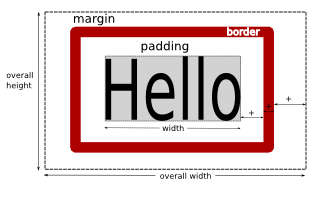

CSS
The very basics
The very basics
Cascading Style Sheets (CSS) are used to control the layout of a HTML documents. They have been introduced to seperate better between content and format. Style-Sheets offer you a wider and more flexible way to design your web pages. With HTML tags you structure information (paragraphs, anchors, lists, etc.) - with CSS you decide their look. Note that its syntax and language has nothing to do with HTML itself. You have to start from scratch!
The advantages of CSS are:
CSS works by defining rules. Each rule is made up of three parts: select the element you want to style, specify the property you want to style and define its value:
selector {property:value;} A solution for setting the color of your paragraph with CSS would look like this:
p {color:red;} All text contained by the <p></p> tag inside the HTML document would then appear red. Or, to give a second example: switching from underline to overline for all hyperlinks:
a {text-decoration:overline;} All <a> inside the HTML file would then display a overline instead of the standard underline.
There are several ways how CSS can be linked to HTML. There are three options: (1) writing CSS directly into the <head></head> of a HTML file, (2) linking to external CSS files, or (3) attaching CSS directly to TAGS.
CSS rules can be written directly into the HTML document's header section. This makes sense if the CSS rules are specific for this particular HTML file and this file only. Watch this example in action and see how it affects the size of the text (font-size).
<html>
<head>
<title>CSS</title>
<style type="text/css">
p {
font-size:40px;
}
</style>
</head>
<body>
<p> My First CSS Rule </p>
</body>
</html>
All CSS information can also be contained in an extra, separate file. Fire-up your favorite text editor, create a new document and save it as "myCSSRules.css". Note the new file extension "*.css" Now write your CSS rules:
body {
background-color:#000000; /* sets the page background to black */
color:#ffffff; /* and the text to white */
}
p {
font-size:3em; /* font size to triple than default */
letter-spacing:2em;
line-height:2em;
}Note the "em" unit. 1 "em" is equal to the default font size. 2 "em" therefore indicates to double the font size. CSS values can be given in absolute units such as pixel (px), inch (in), centimeter (cm) or in relative units such as "em" or percentage (%).
Save your CSS. Now open a fresh HTML file. In the header section import the external CSS file (given it is located in the same folder as your HTML):
<html>
<head>
<title>CSS</title>
<style type="text/css">
@import url("myCSSRules.css");
</style>
</head>
<body>
<p> My First CSS Rule </p>
</body>
</html> Finished. You can import the external CSS into as many HTML documents as you wish. Think about it: from one CSS you can control and manage a unlimited number of HTML files!
Writing CSS rules directly inside HTML tags is of limited use. The power of CSS consist in controling a large number of HTML from one central place. Obviously the styles attached to tags apply to this tag only! Use with caution!!
<p style="font-weight:bold;">to make some text bold</p>
CSS is a very powerful language. It is very flexible when it comes to "knitting" CSS and HTML together. Laying down which styles apply to which HTML tags is crucial for efficient use of CSS. A simple selector has already been introduced, namely the selector which is based on the type of the HTML tag. But there are many more possibilities as shown below. For a complete list of CSS selectors, check out the W3 schools CSS reference (notice the right most column which indicates in which CSS version the property is defined).
Applying a CSS rule according to the type of the HTML tag. By using the name of the HTML tag element itself, the CSS rule will apply to all tags of the same kind.
body {padding:100px 100px;}
p {color:orange;}
a {text-decoration:none}
td {background-color:green;}CSS defines here a style for each of the above mentioned tags.
CSS allows you to define several rules independent of existing tags. These style can be attached to any HTML element by using the class attribute.
h1.main {color:red;} /* specific to h1 */
.underline {text-decoration:underline;} /* any element */
.highlight {background-color:yellow;} /* any element */ The class selector uses the "." and can be attached to several HTML element with the class attribute. Note that the first rule combines a type selector with a class selector. This means ".main" can only be attached to <h1></h1> tags. The rest of the styles can be attached to different HTML tags.
<h1 class="main">principal heading</h1>
<p class="underline">This text is underlined</p>
<p class="highlight">and this one highlighted</p>
<h2><span class="hightlight">sub-heading</span></h2>
The id selector is used to define a unique style.
Note: ID's have to be unique within your HTML document! You cannot have two tags with the same ID!!
It applies only to that element whose ID equals the CSS rule. Usually the ID selector is used to control positioning of elements where each tag (e.g. a layer) has a unique position. To define a unique style use the "#":
#layer01 {position:absolute; bottom:10px; right:10px; background-color:green;} This rule is then linked to HTML the following way:
<div id="layer01"> inside layer 01 </div>
Certain CSS rules can take into account the actual nesting of the HTML elements in order to apply. The following rules specify two font sizes for paragraphs.
p {font-size:26px;}
td p {font-size:12px;}CSS automatially will apply the small font to the paragraph contained with the table cells and the normal font size to paragraphs outside table cells.
Contextual selectors are a convenient way to specify styles without having to use the "class" or "id" attribute all the time. The following second example defines a CSS rule for the anchor tag inside a menu layer.
a {color:blue;}
div#menu {width:150px; height:200px; background-color:gray;}
div#menu a {color:red; display:block;}
You can group or line up several selectors. For example to specify the same rule for both paragraphs <p></p> and list elements <li></li>, write:
p, li {font-size:2em;} Or you can specify the color of several headings in one line
h1, h2, h3, h4 {color:green;}
Another important concept with CSS is inheritance. This means that HTML elements contained by another higher-level HTML elements will inherit its associated parent CSS properties. All paragraphs will inherent for example the CSS rules specified for the body. The advantage is that you can specify a default font-family for the <body> and then only define the exceptions to the rule. Example:
body {font-family: "Times New Roman"; font-size:2em;}
p.quote {font-family: Verdana; font-size:1em;} By default all <p></p> - since they are contained by the <body></body> - will be displayed with "Times New Roman." Certain paragraphs are set off with a specific font (Verdana).
<body>
<h3>This is a heading in Times</h3>
<p class="quote">This is the exception, a quote in Verdana</p>
<p>Here we return to Times</p>
</body>
Considering and taking advantage of the hierarchical relations of HTML and nested tags makes your coding a lot more efficient.
A pseudo format allows you to specify styles for elements (or states) that have no direct expression in HTML. With pseudo-formats you can specify CSS rules for interactive states such as mouseover or mouseleave for example.
In general, the syntax for specifying a pseudo format is
selector:pseudo-class {property:value}You can also combine existing CSS clases with pseudo formats:
selector.class:pseudo-class {property:value}One of the most popular uses of pseudo-formats is the styling of achors. A hyperlink has several states: univisited, visited, mouse over, pressed. You can assign a special format to each of these states.
a:link {color:#3300CC;} //unvisited
a:visited {color:#00CC00;} //visited
a:hover {color:#FFFFFF; background-color:#3300CC;} //mouse over
a:active {color:#FF6600; background-color:#000033;}
//mouse pressed Note, that the order of link, visited, hover, active is important and has to be respected.
The pseudo-formats can be used in the usual selector and class combinations. Thus in order to define two types of pseudo formats depending on the nesting of the anchor, you can write:
#menu a:link {color:#3300CC;}
#menu a:visited {color:#00CC00;}
...
#content a:link {color:#CC3300; text-decoration:none;}
#content a:visited {color:#00CC00; text-decoration:underline;}
... The example displays two different hyperlink styles depending on the location of the anchor, either the menu- or content layer.
The :first-letter pseudo-format allows you to define a specific style for the first letter of a paragraph.
p {background-color:white; color:black;}
p:first-letter {background-color:black; color:white; } The corresponding HTML then doesn't have to mark-off the first letter. Automatically CSS applies the defined style to the first letter:
<p>Every first letter of the paragraph will swap b/w.</p>Similar to the styling the first letter of a paragraph one can specify a variation for the first line as shown below.
p {color:#000000; background-color:#FFFFFF;}
p:first-line {color:#FFFFFF; background-color:#000000} Furthermore, CSS2 contains various other pseudo-elements such as :first-child, :before, :after, :lang, :last-child, :empty and others. Be sure to check the w3c overview to see which pseudo-format is support by which CSS version (1,2 or 3).
Here is a small selection of CSS properties to style paragraphs and characters.
You can choose between using standard fonts or download a custom font. Web safe fonts such as Verdana, Times, Courier, Arial are installed by default on most computers. If these default fonts are used, your page will load very fast. On the other hand you can use custom fonts which are aesthetically more interesting but have the disadvantage that text will load slower the first time a user visits the page, since the browser has to download the font-data first.
Use the font-family in conjunction with some standard font for quick loading (check this list of web safe fonts)
<p style="font-family:Georgia, 'Times New Roman', Times, serif;">Georgia</p>
<p style="font-family:Verdana, Arial, Helvetica, sans-serif">Verdana</p>
<p style="font-family:font-family:'Courier New', Courier, monospace">Couri</p> In CSS3 you can use non-standard fonts by downloading its source (see @font-face). A convenient solution is to download and use fonts from a font-repository such as Google. See the list of available fonts. The code to use one of those fonts is straight forward. First download the font you need (specifying its name here in bold):
<link href='http://fonts.googleapis.com/css?family=Frijole' rel='stylesheet' type='text/css'>
Then define the font-family using the newly download font:
body {font-family: 'Frijole', serif; }
After having specified the font-family, set the font-size: with absolute or relative numeric values
<p style="font-size:14px">Text set to 14 pixels</p>
<p style="font-size:2em">Double default size: 2em</p>
<p style="font-size:120%">Percentage 120%</p>
Set font-weight: bold | bolder | 100-900
<p style="font-weight:bold">bold text</p>
<p style="font-weight:400">numeric value of 400</p>
Set font-style: italic | oblique. On the difference between italic vs oblique see this stackoverflow response.
<p style="font-style:italic">italic</p>
Set line-height: with absolute or relative values.
<p style="line-height:3em">Line-height<br />is set<br />to triple default</p>
Set letter-spacing: to absolute or relative values.
<p style="letter-spacing:-2px;">Negative letter spacing.</p>
<p style="letter-spacing:1.5em;">letter spacing set to 1.5em</p>
Set text-align: left | right | center | justify
<p style="text-align:right">Align 2 right</p>
<p style="text-align:center">center everything</p>
<p style="text-align:justify">justify needs a bit more text....</p>
Set text-decoration: none | underline | overline | line-through
<p style="text-decoration:line-through;">line-through</p>
<p style="text-decoration:overline;">overline</p>
<p style="text-decoration:underline;">underline</p>
Set text-indent: absolute or relative numeric value
<p style="text-indent:20px">The first line is indented <br /> in relation to the second by 20px. </p>
<p style="text-indent:-20px">The first line is indented <br /> in relation to the second by -20px. </p>
Set text-transform: uppercase | lowercase | capitalize
<p style="text-transform:uppercase">Uppercase</p>
<p style="text-transform:lowercase">Lowercase</p>
<p style="text-transform:capitalize">capitalize</p>
Set word-spacing: to absolute or relative numeric value
<p style="word-spacing:-0.2em">Space between words set to -0.2em</p>
Set text-shadow: h-shadow v-shadow blur color
<p style="text-shadow:2px 2px 1px blue">Text shadow with h-shadow:2px v-shadow:2px blur:1px color:blue</p>
Imagine each HTML element is placed inside a box. CSS allows to set the margin, padding and border of this box.

Margins are introduced between the border and the next element whereas padding adds space between the border and the actual content of the tag. Most importantly, margins, paddings and border-width all add to the overall width of the box.
When specifying margin, padding or border each side of the rectangle can be identified with top, right, bottom, left. You can specify the properties individually or all in one go.
If all four values are specified they refer to top, right, bottom, left in this particular order.
property: 10px 11px 12px 13px top=10, right=11, bottom=12, left=13
If only two values are specified they refer to top, bottom and left, right.
property: 10px 20px top=bottom=10px and right=left=20px
If only one value is specified it refers to all four sides
property: 10px top=right=bottom=left=10px
The CSS property margin defines the space between a selected element and its neighbouring, external elements. If you want to create space around an element use margin. You can either select each of the four sides individually or specify all at once.
Note: if you set margin for left & right to auto, this means your element will be centered!
You can specify the margin of each side invididually with margin-top, margin-right, margin-bottom, margin-left.
<html>
<head>
<title>e508 - CSS - Margin</title>
<style type="text/css">
p {
margin-top:40px;
border:#000099 1px solid;
}
</style>
</head>
<body>
<p>First paragraph with margin-top:40px</p>
<p>Second paragraph with margin-top:40px</p>
</body>
</html>
What is important in the above example is to note how margin introduces spacing between the paragraphs.
Padding defines the spacing between a selected element and its content. If you want to avoid text sticking to the border of a layer for example, use padding. Similar to margin you can set each side individually with padding-left, padding-right, etc.
<html>
<head>
<title>e508 - CSS - Padding</title>
<style type="text/css">
p {
padding:100px 40px 1px 30%;
border:#000099 1px solid;
}
</style>
</head>
<body>
<p>First paragraph with padding set </p>
<p>Second paragraph with padding set</p>
</body>
</html>Note how padding introduces a spacing between the border of the paragraph (blue line) and its content.
The border style of any HTML element can be controled by the following properties:
a) border-color: any color value
b) border-width: thin | thick | medium | numeric value
c) border-style: dotted |
dashed |
solid | double |
groove |
ridge |
inset |
outset
c) border-radius: value (CSS3)
Each of the four borders can be controlled individually with border-left-color:, border-left-width:, border-left-style: and the same holds for border-right, border-bottom, and border-top. An alternative is to specify all four borders simultaneously with: border:color width style
<p style="border:#0033FF 3px dotted;">blue 3px dotted border</p>
<p style="border-left:#6600CC 8px solid;">just the left<br/> border</p>
<p style="border-top:#FF6600 1px ridge;">just the top border</p>
Using CSS3 we can furthermore work with border-radius as the following example demonstrates.
p {
padding:20px;
border:#000099 10px solid;
border-radius:8px;
}
The following example puts all CSS properties margin, padding and border in one example.
.boxmodel {
margin:40px 20px;
padding:4px 20px;
border: 5px solid #ac0000;
border-radius: 4px;
float:left;
}
float:left aligns all paragraphs on the same horizontal line.
CSS provides some properties to change the behavior of the element displayed. These come in handy when constructing flexible layouts.
The float property accepts three values: left | right | none and changes the alignment of the element to which it applies. Often it is used to undone the automatic linebreak that comes with block level elements such as <div></div> or <p></p> In the following example, several layers are brought onto the same horizontal line with the float:left property.
div#one {width:33%; height:50px; float:left;}
div#two {width:33%; height:50px; float:left;}
div#three {width:33%; height:50px; float:left;} Without the float property set the layers "one, two, three" would appear one below the other.
In a similar fashion, setting the float property on an image will change where it appears in relation to the text.
img.right {float:right;}
img.left {float:left;} Or, the float property specifies that text continues on the same line, canceling the automatic linebreak of a heading for example:
h1 {font-color:blau; float:left;}
With clear you can specify which side of a floating element does not allow any further element. This comes in handy to clear the side of an image and start a fresh line of text below it.
img.left {float:left;}
img.right {float:right;}
p.clearLeft {clear:left;}
p.clearRight {clear:right;}
clear has to be used in conjunction with the float property.
The display property controls how a given element will be displayed. This sounds tautologic but basically means that you can change the display-behavior of elements. For example, a block-level element such as <p></p> can be displayed as inline and the other way round, an inline element such as <span></span> can be displayed as block level element.
p.inline {display:inline;}
.block {display:block; font-weight:bold;}
For example, the display:block comes in handy if you want to display an inline element such as an anchor across the remaining width available. See this difference at work in the next code snippet and observe how the second links spans across the whole line.
a:link {background-color:#FFF; color:#000; padding:10px; display:block;}
a:hover {background-color:#000; color:#FFF; padding:10px; display:block;}
There is a whole range of further display values available for tables. However, these values are more used for formatting XML files rather than HTML where table tags are available anyway. Check out the CSS Display reference for all available options.
Another way of hidding elements is by setting the visibility property. The difference to display:none is, that the latter does not take up any space whereas the invisible elements do.
p.none {display:none; }
p.hidden {visibility:hidden} In order to really see how this code works, open the example in a new window by clicking on "open" and view the source code.
The overflow property controls what happens to content does does not fit its parent element. overflow:auto adds scrollbars if content does not fit while overflow:scroll always shows the scrollbars. With overflow:hidden the overflowing content will be clipped where overflow:visible renders the content outside the element's box (default behaviour).
p {width:100px; height:100px; border:1px solid black; margin:20px; float:left;}
.o-auto {overflow:auto;}
.o-hidden {overflow:hidden;}
.o-visible {overflow:visible;}
.o-scroll {overflow:scroll;}
The first line specific to the p tag just formats the layout a bit nice and adds a border to see the limit of each paragraph.
The semantic markup introduced in HTML5 allows to construct page layouts differently. Although we still can use <div> tags for layouting, many of the standard page elements such as header, navigation, footer have now their own tags. This does not change the way CSS and HTML work together but it makes our code more meaningful and saves us from typing some <div>'s
A basic layout uses a header, a main content area and a footer. On the HTML side there is nothing new except that we use a div wrapper layer for centering the content in the browser.
<body>
<div id="wrapper">
<header>
<h1>this is the header</h1>
</header>
<section>
<p>Here would come the main content</p>
</section>
<footer>
<p>last but not least, the footer</p>
</footer>
</div>
</body>
Now looking at the CSS, first we reset the margin and padding and tell the browser to render all HTML5 section tags as block.
* {
margin:0px;
padding:0px;}
header, footer, section, aside, article, nav {
display: block;}The wrapper centers the rest of the content
div#wrapper {
width:90%;
margin:0px auto;}While we simply add some color to distinguish the three sections of the document: header, the main section and the footer.
header {
background-color:#CCC;
height:50px;}
section {
background-color:#F3C200;
height:100px;}
footer {
background-color:#CC6;
height:20px;}
The following example is a classic. Apart from header and footer, we have two columns as the main stage, one for the content and the other for the menu.
<body>
<header>
<hgroup>
<h1>The main title</h1>
<h2>A subtile</h2>
</hgroup>
</header>
<article> <p>This is the main section.</p> </article>
<nav>
<ul>
<li>About</li>
<li>Service</li>
<li>Contact</li>
</ul>
</nav>
<footer> <p>the footer</p> </footer>
</body>Open the code in a new window and resize it to see how the width adapts!
First, in our CSS section we introduce a little bit of padding between the browser window and the content. Then, we add some color to the header and footer to actually see them.
body {
padding:0 10%;}
header {
background-color:#0033FF;}
footer {
background-color:#00CCFF;
text-align:center;}The actual trick of aligning both the main article and the navigation horizontally on the same line is done with float:left; while making sure that both fill the full available width. Note that although the sum of the article + nav layer adds up to 100%, the padding introduced for the body actually reduces the overall width to 90% of the browser window.
article {
background-color:#0066FF;
float:left;
width:80%;
height:100px;}
nav {
background-color:#0033FF;
float:left;
width:20%;
height:100px;}
Finally, a more complex example that combines a header, main section, side bar, and footer. The difference to the previous example is the fact that each of these four main sections contains itself further sub-divisions. View this demo page here.
The basic HTML5 structure is quite straight forward:
<body>
<div id="wrapper">
<header id="site">
...
</header>
<article>
...
</article>
<aside class="ads">...</aside>
<aside class="ads">...</aside>
<aside class="ads">...</aside>
<footer>
...
</footer>
</div>
</body>
The CSS for the basic layout looks like follows. First, by wrapping all other content with the wrapper div we restrict the overall page width to 90% of the browser and leave a little bit of extra margin to the top-border. In addition, the margin-left / margin-right is set to auto meaning our content will always be centered inside the browser.
div#wrapper {
width:90%;
margin: 10px auto;
}Next, we set explicitly the height of the header to 80 pixels, add some background color and padding. The margin values introduce top and bottom spacing of 10px. In addition all content will be centered with text-align:center.
header#site {
height:80px;
padding:10px;
background-color:#0033FF;
margin:10px 0px;
text-align:center;
}
The CSS for the article tag. Here we have to make sure that we leave some space for the advertising, so we set its width to 80%. In addition, in order to prevent that the ads are being pushed below the main article, we set float:left.
article {
float:left;
width:80%;
margin-right:10px;
background-color:#0066FF;
}
On the right border we place the ads. This is done with the aside tag indicating only remotely related content to the actual article. Each ad has a specific height and width. The overall width together with the main article adds up to 98% (80% + 18%). This is necessary because we have to take into account the 10px margin-right of the article. float:left makes sure the ads are really on the same height as the main article (not below).
.ads {
height:100px;
width:18%;
background-color:#0033FF;
margin-bottom:20px;
float:left;
}Finally, the footer. Usually has a small font-size which is set in our example to 0.8 units of the standard size. Again, some background color. The clear:both make sure that the footer actually is displayed below the main article; it explictly tells the browser that no floating elements are allowed on both sides of the footer.
footer {
font-size:0.8em;
clear:both;
}
This builds the main layout of the page. Each of the main sections now contains in turn further elements.